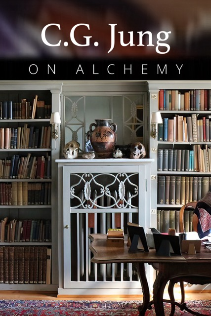
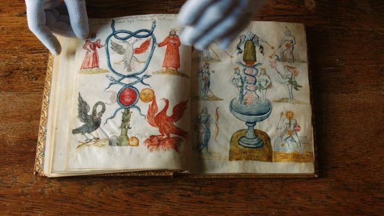
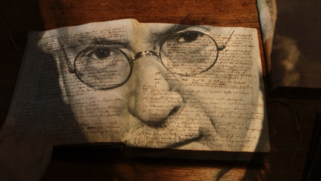
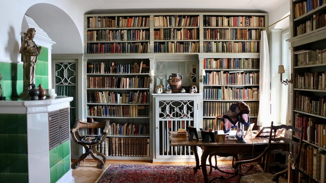

Get full access to the complete documentary series

Discover the secrets of alchemy and psychology. Explore the private rare book collection of C. G. Jung and his personal handwritten excerpts. Filmed at the House of C.G. Jung and Eranos.
Starring: Françoise Bonardel, Paul Bishop, Murray Stein, Aksel Haaning, Alfred Ribi, Thomas Fischer
Special Screening
Hermetic
International
Film Festival
Italy 2023
Official Selection
ART AND PSYCHE
CONFERENCE IV
Pacifica Graduate
Institute
Santa Barbara
C. G. Jung on Alchemy
Chapter 1: Earth (64 min)
Chapter 2: Air (57 min)
Chapter 3: Fire (55 min)
Chapter 4: Water (57 min)
Directors:
Sara Ferro,
Chris Weil
5 years of work and research: Did you know that C.G. Jung interrupted his work on the Red Book because he wanted to dive deep into alchemy? No? Then you should absolutely watch this new docu series consisting of 4 episodes.

The new documentary series by award-winning documentary filmmakers Sara Ferro and Chris Weil, known for their documentary film about the Ritman Library - Amsterdam, released their new work on C.G. Jung and alchemy which has been realized in association with the Foundation of the Works of C. G. Jung in Zurich and ARTOLDO Pictures.
What’s C. G. Jung on Alchemy about? Explore C.G. Jung’s private collection of rare books and discover the secrets of alchemy and psychology. Fathom the knowledge of the transmutation of the soul, C.G. Jung’s excerpts, the hidden story behind the Red Book, Septem sermones and Gnostic wisdom, Aurora consurgens, the Secret of the Golden Flower, the Individuation process, Synchronicity and archetypes, Goethe - the alchemist, Paracelsus and many more.
What’s so special about this documentary series?
There has been spoken a lot about C. G. Jung and his Red Book. But if you really want to understand C. G. Jung’s achievements in psychology you need to follow his journey into alchemy as it connects the different puzzle pieces. One of C.G. Jung’s ground breaking discoveries may be seen that the Trinity, including the God Father, the Holy Spirit and Jesus Christ is in some way incomplete. It lacks nature, it lacks Human. And alchemy offered this missing piece.
It is mind blowing and will help you to understand the principles of alchemy from a completely new perspective.
Moreover, for bibliophils, all rare book sources have been added into the film. If you want to research a certain rare book, just pause the film to take note of the title or the author of the work.


Published: 10/26/2023